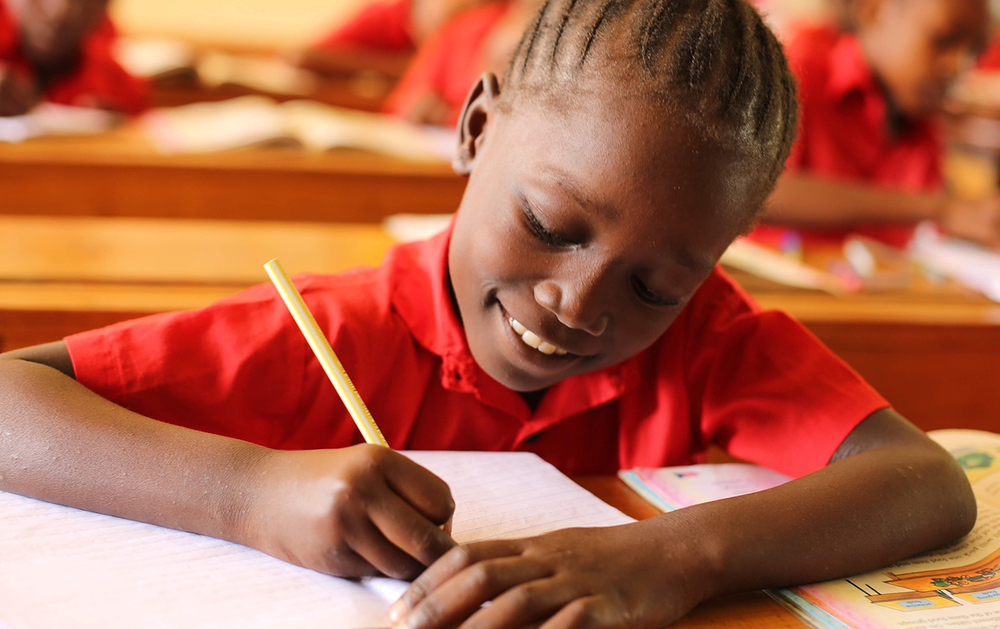

Why should you choose us?
Academic Excellence

Presbyterian Primary School is the leading Presbyterian institution in the Country, recognized for exceptional academic performance. We offer a nurturing environment that ensures every student has the opportunity for intellectual growth and academic success.
The Power of Small Actions
Every student at Presbyterian Primary School plants a tree, nurturing it throughout their academic journey. This cultivates responsibility and climate awareness from an early age, symbolizing growth and fostering ecological consciousness.
Christian Values

At Presbyterian Primary School, we integrate Christian values into our core educational philosophy. Rooted in the teachings of Christ, our approach fosters moral integrity, compassion, and empathy. Students are immersed in an environment that promotes love, kindness, and a strong sense of community.